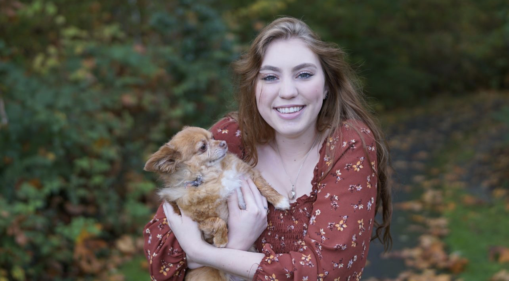

Eugene, Oregon
I'm a very hardworking person who is willing to learn and not afraid to ask questions. I currently am working towards my Bachelors of science in Psychology with a minor in Computer Information Technology. I strive to learn more and am excited to take on new challenges. I have been involved in extracurricular activities such as the Women In Computer Science Club and plan to run for a position in the upcoming Spring along with working part time at Costco.
Bachelor of Science in Psychology / Minor in CIT (Inprogress)
Associates of Arts | Green River College | 2024-2025
Diploma | Kentwood Highschool | 2022-2024